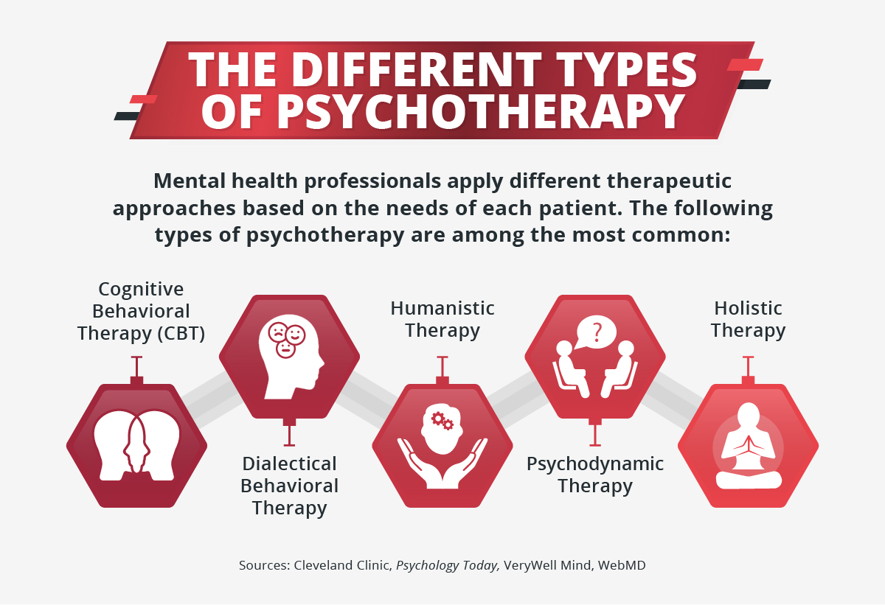

# The Untold Story of Psychology by Jun the TechShinobi Apr 2025 --- ## Psychotherapy Approaches What's the three major therapies in the world? --- ## Psychotherapy Approaches ### Three major therapies - Cognitive behavioral therapy (CBT) - Humanistic-Existential therapy - Psychoanalytic/Psychodynamic therapy [Learn more from APA](https://www.apa.org/topics/psychotherapy/approaches) --- <section data-markdown data-background-image="Brain-cells.jpg" data-background-opacity="0.2" data-background-gradient="radial-gradient(#000, #000)"> ## School of Thoughts - Biologism (Scientific Psychology) - Experimentalism (Wilhelm Wundt, 1860s) - Structuralism (Edward Titchener, 1890s) - Functionalism (William James, 1890s) - Behaviorism (John B. Watson, 1920s) - **Cognitive revolution!** - Cognitivism (George Miller, Noam Chomsky, 1950s) - Merger of Behavioral and Cognitive (1980s) - Evolutionary psychology (1980s) - Cognitive science (1980s) - Cognitive neuroscience (late 20th century) --- <section data-markdown data-background-image="AFMK.jpg" data-background-opacity="0.1" data-background-gradient="radial-gradient(#333, #000)"> ### [Psychoanalysis](https://youtu.be/gJWSz7Jb7VA) (Depth psychology) - Classical Freudian (Sigmund Freud, 1890s) - Object relations theory (Melanie Klein, 1940s) - Independent Group (D. W. Winnicott, 1940s) - Transactional analysis (Ronald Fairbairn, 1940s) - Attachment theory (John Bowlby, 1960s) - Interpersonal psychotherapy (IPT) - Lacanian (Jacques Lacan, 1950s) - Gender Theory (Judith Butler, 1990s) - Critical Theory (Slavoj Žižek, 2000s) - Neo-Freudianism - Individual psychology (Alfred Adler, 1910s) - Neo-Adlerian (Karen Horney, 1930s) - Interpersonal theory (Herbert Sullivan, 1930s) - Cultural School (Erich Fromm, 1950s) --- <section data-markdown data-background-image="eh.png" data-background-opacity="0.1" data-background-gradient="radial-gradient(#333, #000)" data-background-size="auto;"> - Post-Freudians (Otto Rank, 1920s) - Ego psychology (Anna Freud, 1930s) - Self psychology (Heinz Kohut, 1960s) - Developmental psychology (Erik Erikson, 1950s) - Existential analysis (Rollo May, 1950s) - Existential psychology (Viktor Frankl, Irvin D. Yalom, 1970s) - **Humanistic Movement!** (Abraham Maslow, 1950s) - Person-centered therapy (Carl Rogers, 1950s) - Group therapy - Systems-centered therapy - Transpersonal psychology (Stanislav Grof, 1970s) - Positive psychology (Martin Seligman, 2000s) --- <section data-markdown data-background-image="maxresdefault.jpg" data-background-opacity="0.1" data-background-gradient="radial-gradient(#333, #000)" data-background-size="auto;"> - Jungian Analytical psychology (Carl Jung, 1910s) - Post-Jungian (Andrew Samuels) - Archetypal psychology (James Hillman) - Process-oriented psychology (Arnold Mindell) - Personality psychology (Gordon Allport, 1930s) - Myers–Briggs Type Indicator (1990s) - Sandplay therapy - Reichian (Wilhelm Reich, 1930s) - Somatic psychology - Body psychotherapy (John Pierrakos, 1960s) - Gestalt therapy (Fritz Perls, 1960s) - Psychodynamics [Reference on Psychology History](https://acd.pressbooks.pub/generalpsychology/chapter/reading-the-cognitive-revolution-and-multicultural-psychology/) [Freud and Beyond: A History of Modern Psychoanalytic Thought](https://www.goodreads.com/book/show/80452.Freud_and_Beyond) --- <section data-markdown data-background-image="prison-bars.jpg" data-background-opacity="0.1" data-background-gradient="radial-gradient(#000, #000)" data-background-size="auto;"> ## The Untold Controversy ### Experiments - [Stanford prison experiment (Stanford University, 1971)](https://en.wikipedia.org/wiki/Stanford_prison_experiment) - [Monster Study (University of Iowa, 1939)](https://en.wikipedia.org/wiki/Monster_Study) - [Milgram experiment (Yale University, 1961)](https://en.wikipedia.org/wiki/Milgram_experiment) - [Little Albert experiment (Johns Hopkins University, 1920)](https://en.wikipedia.org/wiki/Little_Albert_experiment) - [Social isolation experiments (Harlow's rhesus monkeys, 1930)](https://en.wikipedia.org/wiki/Harry_Harlow#Monkey_studies) --- <section data-markdown data-background-image="eugen.jpg" data-background-opacity="0.1" data-background-gradient="radial-gradient(#000, #000)" data-background-size="auto;"> ### Treatments - Electroconvulsive therapy (shock therapy), pre-1960s - Hydrotherapy (Cryotherapy, hot and ice) - Lobotomy (Psychosurgery, pre 1970s) - Aversion therapy (behavior modification) - Surgical castration (homosexual, black, psychotic) - Marriage therapy (Legal corrective rape by misogyny and homo/trans-phobic) ### Biologism - [Genetic determinism](https://en.wikipedia.org/wiki/Biological_determinism) - [Compulsory sterilization](https://en.wikipedia.org/wiki/Compulsory_sterilization) ([Eugenics in the United States](https://en.wikipedia.org/wiki/Eugenics_in_the_United_States)) - Pharmacotherapy & [harmaceutical industry](https://en.wikipedia.org/wiki/Pharmaceutical_industry#Controversies) ([Michel Foucault](https://en.wikipedia.org/wiki/Michel_Foucault_bibliography), [Will Self](https://youtu.be/GlFbuqunb1I)) - [Over-diagnosis of ADHD](https://en.wikipedia.org/wiki/Attention_deficit_hyperactivity_disorder#Diagnosis) --- <section data-markdown data-background-image="Foucault-protest.jpeg" data-background-opacity="0.1" data-background-gradient="radial-gradient(#333, #000)" data-background-size="auto;"> ## Social Movement - [Anti-Psychiatry Movements](https://en.wikipedia.org/wiki/Anti-psychiatry) ([Psychiatric survivors movement](https://en.wikipedia.org/wiki/Psychiatric_survivors_movement)) - [Rosenhan experiment](https://en.wikipedia.org/wiki/Rosenhan_experiment) - Humanistic movement ([Human Potential Movement](https://en.wikipedia.org/wiki/Human_Potential_Movement)) - Feminist movement (anti-sexism) - [Borderline personality disorder as new Hysteria](https://philpapers.org/archive/REYTNH.pdf) - Civil rights movement (anti-racism) - [Scientific racism and structural racism on black](https://en.wikipedia.org/wiki/Political_abuse_of_psychiatry#United_States) ([Jonathan Metzl](https://en.wikipedia.org/wiki/The_Protest_Psychosis)) - Countercultural movement (anti-patriarchy) - Gay liberation movement (anti-homophobia) - [Sexual orientation and trans was mental disorder in the APA's DSM](https://en.wikipedia.org/wiki/Transgender_sexuality#Classifying_transgender_people_by_sexual_orientation) - BLM movement (anti-racism again) - LGBTQ movements (anti-heteronormativity) ---  --- <section data-markdown data-background-image="4c.jpg" data-background-opacity="0.2" data-background-gradient="radial-gradient(#333, #000)" data-background-size="cover"> ## Further Readings CBT: Antonio Damasio, Daniel Dennett, Steven Pinker DBT: Alan Watts, D. T. Suzuki, Marcus Aurelius, Hegel Humanistic: Sartre, Fromm, Nietzsche, Kierkegaard Psychoanalytic: Bruce Fink, Darian Leader, Dylan Evans, Todd McGowen Spiritual: Krishnamurti, Taoism, Gnosticism, Tarot --- <section data-markdown data-background-image="jpzizek.jpg" data-background-opacity="0.3" data-background-gradient="radial-gradient(#000, #000)" data-background-size="cover"> ## Videos / Podcasts [PSYCHOTHERAPY - Jacques Lacan](https://youtu.be/5OnhOXq7m4w) [Slavoj Zizek debates Jordan Peterson](https://youtu.be/qsHJ3LvUWTs) [Why Theory Podcast](https://podcasts.apple.com/us/podcast/why-theory/id1299863834) [Derek Hook](https://www.youtube.com/channel/UCzdZyq2SC9BtMn3fLTknIMQ) [Epoch Philosophy](https://youtu.be/q4vUaMeZhZ4) [PlasticPills](https://youtu.be/UBhYq7HqLXo) --- <section data-markdown data-background-image="pf.jpg" data-background-opacity="0.1" data-background-gradient="radial-gradient(#333, #000)" data-background-size="cover"> ### Demystify Psychoanalysis - Sigmund Freud - Libido (Eros and Thanatos) vs sex drive - id, ego, and superego (iceberg) - Oedipus complex - repression and defence mechanisms - psychosexual stages (oral, anal, genital) - Carl Jung - Psychological Types (Extraversion and introversion) - complex (ambivalence) - Collective unconscious - Archetypes and Shadow (Anima and animus, Taoism yin-yang) - Synchronicity (social, emotional, psychological, and spiritual) - Enantiodromia (yin-yang, Taoism qi) --- <section data-markdown data-background-image="Freud_Adler.jpg" data-background-opacity="0.1" data-background-gradient="radial-gradient(#333, #000)" data-background-size="cover"> - Alfred Adler - Inferiority complex - Compensation - Erich Fromm - The Art of Loving - Being and Having (analytic social psychology) - Melanie Klein - Projective identification - introjection - D. W. Winnicott - Holding space (safe environment) - Good enough parent and omnipotence - transitional objects - True and false self (persona, ideal ego) --- <section data-markdown data-background-image="lacan.jpg" data-background-opacity="0.1" data-background-gradient="radial-gradient(#333, #000)" data-background-size="cover"> - Lacanian (Jacques Lacan) - Mirror stages - Real, Symbolic, Imaginary - desire vs need vs demand - Drive and Jouissance - Neurosis, psychosis and perversion - Variable-length session - Heinz Kohut - Idealizing (omniptence, projection, tranference) - Self Objects (Linus van Pelt's security blanket) - Empathy (introspection, Objet petit a) --- <section data-markdown data-background-image="shinobi.png" data-background-opacity="0.1" data-background-gradient="radial-gradient(#000, #000)" data-background-size="contain"> ## About me <p style="font-size:12vw; ">忍</p> <p style="font-size:40%;position: relative;top:45px">こころ やいば</p> <p style="position: relative;top:20px">心 刃</p> <p>-Heart Under Blade-</p> A Technologist who Cares about People [techshinobi.org](https://techshinobi.org)